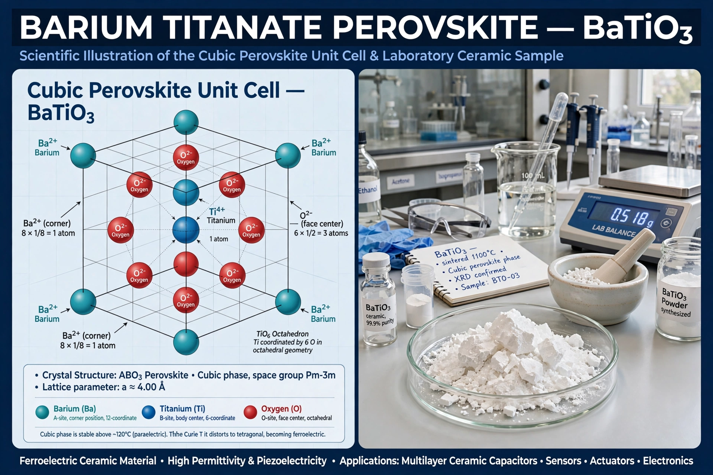

Barium titanate (BaTiO3) is the inorganic compound with the chemical formula BaTiO3. It is a barium salt of metatitanic acid and a ferroelectric ceramic material with piezoelectric and photorefractive effects.

It has a perovskite structure. Below its Curie temperature of about 120 °C it is ferroelectric with a tetragonal structure; above it, cubic and paraelectric. It has a high dielectric constant.
It is widely used in multilayer ceramic capacitors, piezoelectric transducers, thermistors (PTC), and electro-optic devices.